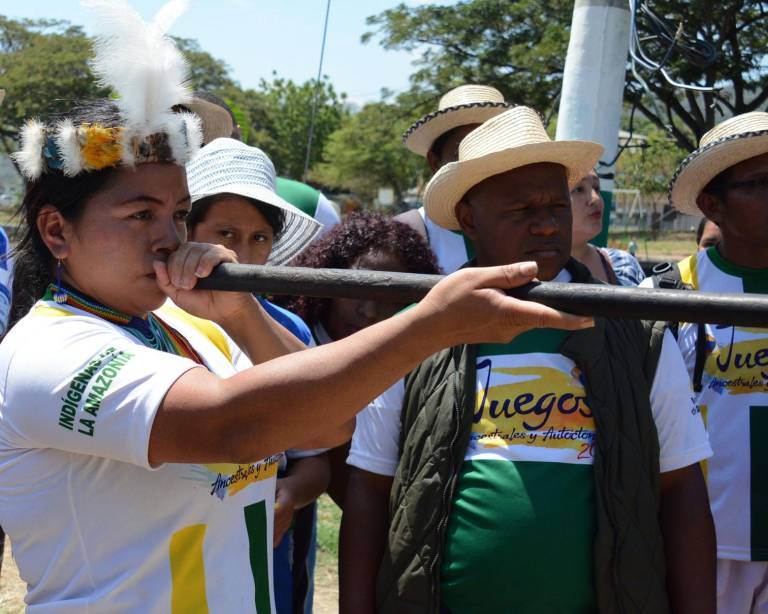
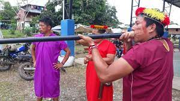
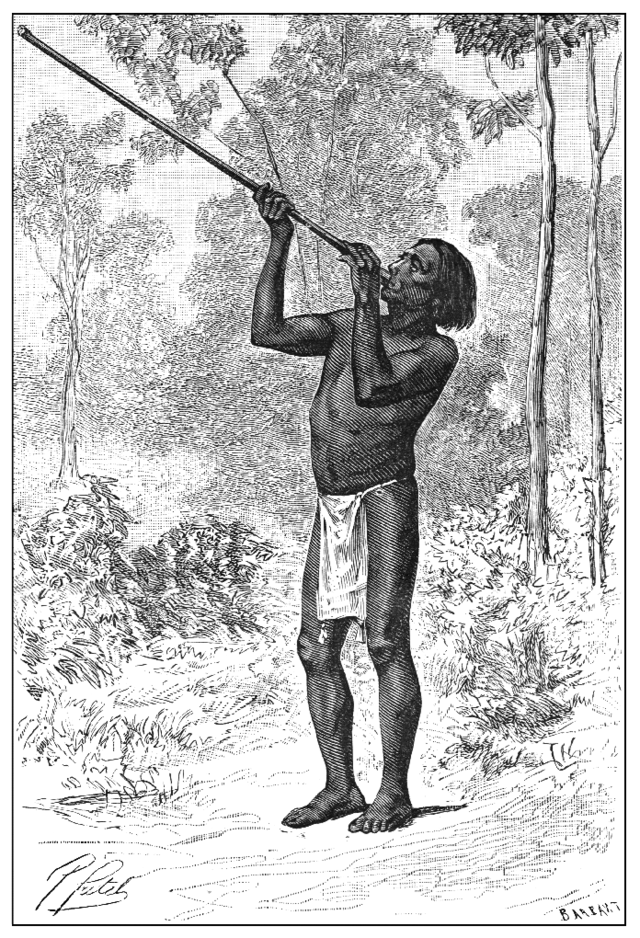

La bodoquera ecuatoriana es un juego tradicional y popular que ha perdurado a lo largo del tiempo, especialmente en comunidades rurales y durante festividades locales en Ecuador. Este juego, conocido por diferentes nombres según la región, involucra destrezas físicas y estratégicas en un contexto lúdico y festivo. Su origen se remonta a tradiciones ancestrales, y su práctica ha perdurado como parte del patrimonio cultural del país.
El juego de la bodoquera suele jugarse en un espacio al aire libre, donde se establece un área designada como campo de juego. Los participantes, generalmente jóvenes y adultos, forman dos equipos y utilizan una bola de trapo llamada "bodoque". El objetivo es lanzar la bodoque de un extremo del campo al otro, mientras los jugadores del equipo contrario intentan interceptarla o evitar que cruce una línea establecida.
|  |
La bodoquera no solo es un juego físico, sino que también es una expresión de la camaradería y la tradición. La participación en este juego fomenta el trabajo en equipo, la coordinación y la agilidad física. Además, la presencia de la bodoquera en celebraciones locales refleja la importancia de preservar las tradiciones culturales y proporciona un espacio para la diversión y la conexión comunitaria.
Aunque la bodoquera no es tan conocida a nivel internacional como algunos otros juegos tradicionales, sigue siendo un componente vibrante de la riqueza cultural de Ecuador. La continuidad de este juego a lo largo del tiempo destaca la importancia de preservar las prácticas lúdicas que han sido transmitidas de generación en generación, proporcionando un vínculo entre el pasado y el presente en la rica historia del país.
La Bodoquera, también conocida como la "bola al hoyo" o "juego de la bola con el hoyo", es un juego tradicional ecuatoriano que tiene sus raíces en la cultura indígena del país. Este juego, que ha perdurado a lo largo de generaciones, se practica especialmente en comunidades rurales y durante festividades tradicionales. Los inicios de la Bodoquera se remontan a tiempos precolombinos, sirviendo como un reflejo de las actividades lúdicas y sociales de las poblaciones indígenas.
|  |
El juego consiste en lanzar una bola de madera, llamada "bodoque", hacia un hoyo excavado en el suelo. El desafío reside en lograr que la bola entre en el hoyo con la menor cantidad de lanzamientos posibles. Aunque las reglas pueden variar ligeramente, la esencia del juego implica destreza y precisión en el lanzamiento de la bola. Este juego tradicional no solo ha sido una forma de entretenimiento, sino que también ha tenido connotaciones ceremoniales y rituales en algunas comunidades indígenas, conectándolo con la espiritualidad y la celebración de la naturaleza.
A lo largo del tiempo, la Bodoquera se ha mantenido como una tradición arraigada en la identidad cultural ecuatoriana. Durante festivales y celebraciones, se organizan torneos y competiciones de Bodoquera, proporcionando una oportunidad para que las comunidades se reúnan, celebren y preserven esta práctica ancestral. La transmisión oral ha sido fundamental para la continuidad del juego, permitiendo que las técnicas y reglas se transmitan de generación en generación, asegurando así que la Bodoquera siga siendo parte integral del patrimonio cultural ecuatoriano.
La sección del llamado Códice Boxer, que trata de los usos y costumbres de los antiguos habitantes del archipiélago de Visayas, afirma que utilizaban cerbatanas para matar pájaros. Fíjate en la frase: “Usan cerbatanas como las que se usan para matar pájaros en España”.
Tienen otras hechas de palo a manera de petos y espaldares, que defiende una flecha y una lanza, detienen arcos y flechas, en los hierros de las cuales echan algunas veces ponzoña, que hay mucha en todas las islas Philipinas y, en algunas de estas islas, usan unas cerbatanas como las que en España hay con que matan pájaros, con las que les tiran unas flechuelas muy pequeñas con hierros muy agudos, las cuales tiran por el agujero de la cerbatana. Y van los hierros de estas flechuelas llenos de ponzoña o yerba y, si hacen sangre en la herida que dan o hacen mueren de ellas, aunque sea muy poca. Códice Boxer. Costumbres y usos, ceremonias y ritos de Bisayas. [34v]. Siglos XVI y XVII
Otras crónicas españolas posteriores, ya en el siglo XVIII, también mencionan el uso de la cerbatana como arma militar utilizada por los habitantes de Filipinas. Los relatos de una expedición que partió de Manila hacia el reino de Jolo en marzo de 1731 describen un ataque a las tropas de Bual en Mindanao. Durante este ataque, las tropas locales se defendieron detrás de empalizadas, atacando con artillería, lantakas y cerbatanas.
Una emboscada que hicieron con más de veinticinco o treinta hombres, y de ellos no quedaron sino cinco o seis hombres, los cuales huyeron porque habían caído en una partida, como se decía, y de la dicha partida con tanta habilidad. y disposición para disparar contra nuestra infantería con lantakas y cerbatanas, de pie alrededor de su estaca artificial,Ataque al destacamento de Bual, Mindanao. AGI, Filipinas, 14 de junio de 1731
El juego consiste en lanzar una bola de madera, llamada "bodoque", hacia un hoyo excavado en el suelo. El desafío reside en lograr que la bola entre en el hoyo con la menor cantidad de lanzamientos posibles. Aunque las reglas pueden variar ligeramente, la esencia del juego implica destreza y precisión en el lanzamiento de la bola. Este juego tradicional no solo ha sido una forma de entretenimiento, sino que también ha tenido connotaciones ceremoniales y rituales en algunas comunidades indígenas, conectándolo con la espiritualidad y la celebración de la naturaleza.
|  |
A lo largo del tiempo, la Bodoquera se ha mantenido como una tradición arraigada en la identidad cultural ecuatoriana. Durante festivales y celebraciones, se organizan torneos y competiciones de Bodoquera, proporcionando una oportunidad para que las comunidades se reúnan, celebren y preserven esta práctica ancestral. La transmisión oral ha sido fundamental para la continuidad del juego, permitiendo que las técnicas y reglas se transmitan de generación en generación, asegurando así que la Bodoquera siga siendo parte integral del patrimonio cultural ecuatoriano.